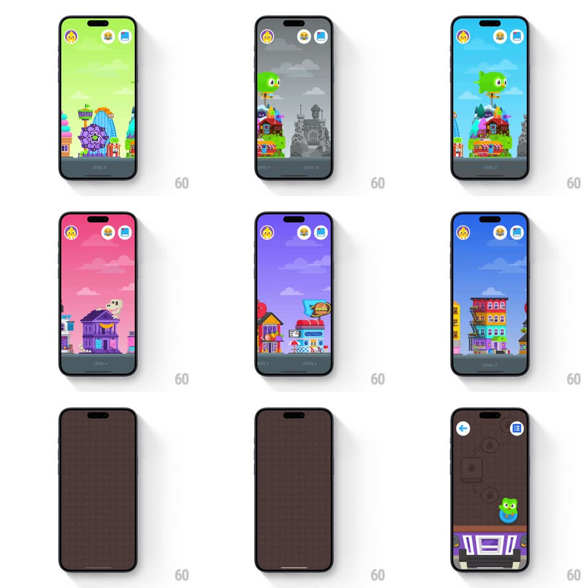

Media
Frame-by-frame

Rebuild this interaction 1:1: Duolingo ABC's level picker - a horizontally scrolling world map where swiping between levels sweeps the entire background color (blue sky to green hills to gray castle to pink town to dusk city), illustrated scenes parallaxing past, and a "LEVEL X" badge pinned bottom.

Rebuild this interaction 1:1: Duolingo ABC's level picker - a horizontally scrolling world map where swiping between levels sweeps the entire background color (blue sky to green hills to gray castle to pink town to dusk city), illustrated scenes parallaxing past, and a "LEVEL X" badge pinned bottom. ## Integration Integration: stack-agnostic spec - springs given as stiffness/damping, timed motions as duration + curve; map every value to your framework and animation library of choice. ## Scene Full-screen illustrated worlds (Duo's house on a hill, a carnival wheel, a gray spooky castle, a pink town, colorful city towers). Top: three circular buttons (profile, bee, book). Bottom: a dark "LEVEL N" pill. ## Motion spec Pattern: parallax world-swipe with chromatic scene shifts. - Swipe: pages scroll with paging snap (spring ~320/24 to the nearest level), but the BACKGROUND COLOR cross-blends continuously between adjacent worlds' palettes (blue -> green -> gray -> pink -> dusk) - the sky itself travels. - Parallax layers: distant clouds move at 0.2x, buildings at 0.6x, foreground props at 1.1x - the scene has depth while swiping. - The LEVEL pill rolls its digit (200ms) when a new world passes 50% and does a small hop (translateY -6px, spring ~400/18) on settle. - Locked worlds are desaturated gray; a tap on one shakes the lock node (+-6px, 3 cycles, 250ms) - colorful unlocked, ghost locked. - Tap an unlocked world: it scales up slightly (1.04) and pushes into the level (300ms zoom). ## Calibration - Color blending uses the midpoints of neighboring palettes - no muddy gray midway between saturated colors. - The top buttons stay fixed and recolor per world (always legible) - chrome floats, world moves. ## Reduced motion Worlds crossfade; background color cuts on settle. ## Don't miss - The color transition is the signature: even with eyes off the illustrations, the screen's hue tells you the world changed. - The gray castle isn't an art choice - it's a locked state; preserve the saturation = unlocked language.